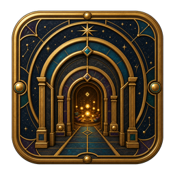
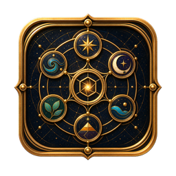
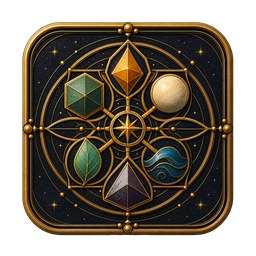
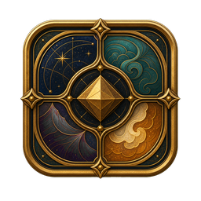
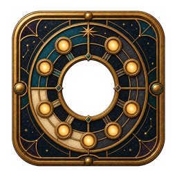

ScenesWorlds become present| Source | Canonical | Category | Decision |
|---|
150 crafted Domain marks, world Instruments, and utility seals—warm, celestial, precise, and ready for Kiduna.
Scenes, Capacities, Elements, Themes, and Roles are the five conceptual taxonomies. Each has a rounded-square gateway. Their members are circular.

ScenesWorlds become present
CapacitiesPower held in relationship
ElementsA grammar of living parts
ThemesA world reveals its nature
RolesContribution becomes a living patternRealm Forms, Organization Signatures, Talismans, Totems, Actor Types, governance and agreement seals, lifecycle and privacy seals, Ally States, Value, onboarding, Navigation, modes, Media instruments, and Vault are world objects rather than conceptual taxonomies. Ecosystem alone is hexagonal.